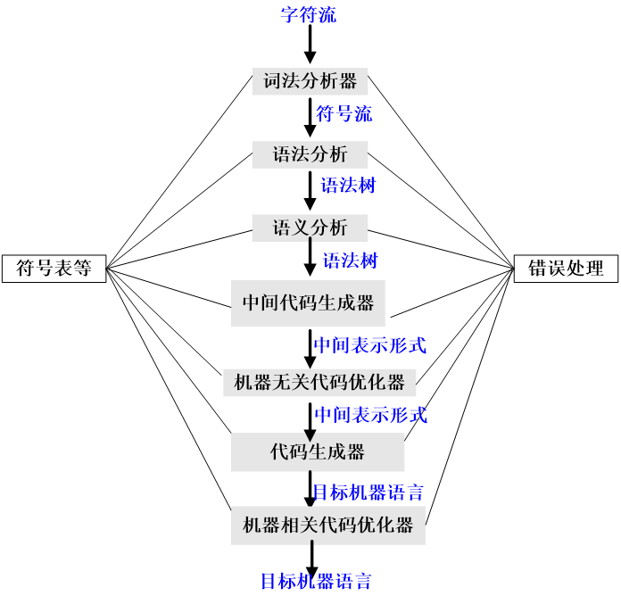
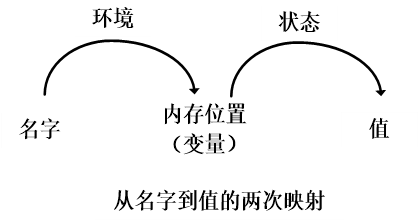

C1 编译概论¶
1.1 语言处理器¶
编译: 从源语言 (或某种低层语言) 表示的算法到面向硬件的目标语言表示的算法的一个等价变换1 .
1.2 编译器的结构¶
Overview¶
编译器不仅要将源程序映射为 语义等价 且 可以执行 的目标程序, 还要对程序进行优化.
从源程序映射到可执行目标程序, 过程可以分为两部分:
- 分析: 通常称为前端
- 中间表示: 将程序分解成为多个组成要素, 并加上语法结构, 创建中间表示
- 检错: 检测语法或语义上的不一致性, 报错
- 综合的前置步骤将符号表 & 中间表示 (IR) 一起传递给综合部分
- 综合: 通常称为后端
- 根据中间表示和符号表构造目标程序
分为前端 & 后端的一个重要考虑是便于移植.
优化既有分析, 也有综合.

语法树: 语法分析生成语法树, 语义分析生成的语法树是已经经过修饰的语法树.
中间表示 (IR): 一般将 语法树, 带注释的语法树, 中间代码, 符号表 等统称为中间表示.
符号表: 贯穿编译的各个阶段, 甚至在程序运行时都有作用.
错误处理: 在编译的各个阶段都有所涉及, 但是编译能够发现的错误大多是在编译器的前端阶段发现的.
Preview by Example: 编译赋值语句

1.2.1 词法分析¶
词法分析程序 (Scanner) 将源程序的字符流组成记号流, 并在词法分析的同时完成一些可行的操作, 如填符号表.
记号: 逻辑上有内聚力的字符序列.
单词: 形成记号的字符序列, 被称为该记号的单词;
- 形如:
<token-name, attribute-value>.
例 (词法分析)
赋值语句:
position = initial + rate \* 60词法分析后可以得到 7 个单词:
- 标识符
position(<id,1>), 赋值号=(=/assignop), 标识符initial(<id,2>), 加号+(+/addop), 标识符rate(<id,3>), 乘号*(*/multop), 数字 60(60/<num,60>).
1.2.2 语法分析¶
语法分析程序 (Parser) 将记号流按语言的语法结构层次分组, 最终得到分析树或语法树 (syntax tree).
语法树: 每个内部节点表示一个计算 (如前例的 =, +, _ 等), 而叶子节点表示参与运算的记号; 树的层次表征了计算的优先次序 (如本例中 _ 优先于 + ).
- 语法树是编译器后续工作的依托.
例 (语法分析)

1.2.3 语义分析¶
语义分析程序 (Semantic Analyzer) 检查程序的语义正确性.
语义: 程序的语义决定了程序的运行.
静态语义: 程序设计语言中存在在执行前可以确定而不易被语法表示的特征, 这些特征称为静态语义. 静态语义也是语义分析的内容.
典型的静态语义一般包括声明和类型检查等.
- 类型检查: 检测每个算符是否具有匹配的运算对象
- 可能会增加强制类型转换
语义分析程序计算得到额外信息 (如数据类型) 等, 这些额外信息将作为属性 (attribute), 填加到语法树中.
例 (语义分析)
1.2.4 中间代码生成¶
把一个源程序翻译成目标代码的过程中, 一个编译器可能构造出一个或多个中间表示.
不同编译器选择的中间代码可能不同
- (中间代码?) 是对机器的一种抽象
- 选择依据: 要易于生成, 且能够轻松翻译为目标机器语言
三地址代码是一种常用的低层表示:
- 每个指令具有 3 个运算分量
- 每条赋值指令右部只能有 1 个运算符, 指令次序决定了运算完成的顺序
- 编译器应该生成 1 个临时名字, 用来存放一个三地址指令计算得到的值
- 有些指令, 其运算对象可以少于 3 个
例 (生成三地址代码序列)
1 2 3 4 | |
1.2.5 代码优化¶
机器无关优化: 改变中间代码, 得到更好的目标代码.
例 (Intersting fact about code optimization)
- 一种合理的优质目标代码生成方法: 使用一个简单的算法生成中间代码, 其后再对其进行代码优化;
- 一种常见的优化方式: 将可以提前到编译时刻完成的工作尽可能在编译时刻完成;
- 例: 将前例中的
60直接变成60.0, 可以消除inttofloat运算.- Risk case: 由于编译程序的计算机与目标程序运行的计算机可能是不一样的, 在编译时刻完成某些工作, 可能是有风险的, 因此, 一种可能的方式是把要在编译时刻完成的计算放在目标机上真实执行, 把得到的计算结果用于编译器的优化和代码生成中
不同的编译器, 它们的优化存在很大的差异.
目标代码优化器 (Target Code Optimizer): 改进目标代码.
例 (目标代码优化器):
- 选择合适的编址模式, 以提高程序性能
- 将速度慢的指令换为速度快的指令
- 删除多余的代码
- 寄存器优化
- 软流水
- ...
1.2.6 代码生成¶
代码生成器 (Code Generator) 将源程序对应的中间表示映射到目标语言, 生成目标代码.
- 如果目标语言是机器代码, 那么将变量映射为其在机器上的存储位置;
- 目标机器的特性是代码生成情况的主要影响因素;
- 寄存器的合理使用是一个重要问题.
例 (代码生成)
1 2 3 4 5 | |
1.2.7 符号表管理¶
每个名字一个表项, 其中信息对存储管理等很重要.
1.2.8 将多个阶段组合成 "趟"¶
对于一个特定的实现, 前述的步骤都可以组合成为一个 "趟", 每趟读入一个输入文件, 并产生一个输出文件, 实现对程序的一趟处理.
1.2.9 编译器构造工具¶
Reading
编译器是一个复杂的系统软件, 真实编译器的开发需要大量的工具的支持, 包括常规的软件开发类工具, 以及编译器开发特色的构造工具
特色工具: 使用专用语言描述和实现特定的组件, 本身算法可能很复杂, 但可以对编译器开发者隐藏细节
常用的工具:
- 语法分析器的生成器, 如 YACC
- 扫描器的生成器, 如 Lex
- 语法制导翻译的引擎
- 代码生成器的生成器, 基于规则生成代码生成器
- 数据流分析引擎
- 编译器构造工具集: 提供了构造编译器的不同阶段的例程地完整集合
1.3 程序设计语言的发展历程¶
历史进程略.
程序设计语言必须要有明确而确切的定义:
- 语法:合法程序的构成规则
- 语法规则要满足: 可读性/ 可写性/ 易检验性/ 易翻译性/ 无二义性
- 语义: 构成程序的各个语法成分的意义; 程序的执行效果说明了程序的语义
- 静态程序语义: 编译时刻可以确定的语义
- 动态程序语义: 运行时刻才能确定的语义
- 语用: 语言符号与使用者之间的关系, 如变量的物理意义等
程序设计语言发展对编译器的影响¶
- 新的成分/ 机制的出现, 要求新的编译技术支持
- 新的需求
- 对编译实现的支持
编译器技术的发展对语言的有力支持¶
- 优化效果是程序设计语言普及的一个重要推动因素
- 编译技术的发展可以简化/ 改良语言的设计
语言种类的相关介绍略.
1.4 构造一个编译器的相关科学¶
1.4.1 编译器设计和实现中的建模¶
- 建模抽象出数学范式, 设计, 通过实际测试来验证;
- 编译器的处理必须保证被编译程序的语义不变;
- 好的编译器具有普适性, 使得其编译的程序普遍获益.
最基本的数学模型是 FSM, RE, CFG 和树结构.
1.4.2 代码优化的科学¶
优化: 编译器通过优化, 以生成更高效的代码.
编译器优化必须满足下面的设计目标:
- 优化必须是正确的, 也就是说, 不能改变被编译程序的含义;
- 优化必须能够改善很多程序的性能;
- 优化所需的时间必须保持在合理的范围内;
- 所需要的工程方面的工作必须是可管理的;
1.5 编译技术的应用¶
编译技术在其他领域的应用有:
- 高级程序设计语言的实现
- 针对计算机体系结构的优化
- 新计算机体系结构的设计
- 程序翻译
- 软件生产率工具 具体内容略.
1.6 程序设计语言基础¶
1.6.1 静态和动态的区别¶
在为一个语言设计一个编译器时, 最重要的问题之一是 "编译器对一个程序可以做出哪些判定", 而另一个问题是 "(语言中的) 声明具有何种作用域".
Q1: 编译器对程序可做出何种判定¶
静态策略: 如果某个语言使用的策略支持编译器 静态 决定某个问题, 则称这个语言使用了一个 静态策略, 或者说这个问题可以在 编译时刻 (compile time) 决定.
- 如 C 语言中的变量名/ 变量类型.
动态策略: 一个只允许在运行程序的时候做出决定的策略被称为 动态策略 (dynamic policy), 或者被认为需要在 运行时刻 (run time) 做出决定.
- 如 C 语言程序变量 (非常量) 的值
Q2: 声明具有何种作用域¶
静态作用域 (static scope): 如果仅通过阅读程序就可以确定一个声明的作用域, 那么这个语言使用的是静态作用域, 或者说词法作用域 (lexical scope).
动态作用域 (dynamic scope): 如果仅通过阅读程序 无法 确定一个声明的作用域, 那么这个语言使用的是动态作用域.
如果使用动态作用域, 当程序运行时, 同一个对 x 的使用会指向 x 的几个声明中的某一个.
大部分语言 (比如 C 和 Java) 使用静态作用域.
1.6.2 环境与状态¶
环境 (environment): 从名字到存储位置的映射; 如果认为变量就是内存位置, 也可以理解为名字到变量的映射.
- 如 C 语言中的左值2 到内存位置的对应.
状态 (state): 从内存位置到它们的值的映射.
- 如 C 语言中将左值映射为它们的相应右值.

1.6.3 静态作用域和块结构¶
本节内容: 考虑块结构语言的静态作用域规则, 其中块 (block) 是声明和语句的一个组合.
块结构 (block structure): 允许一个块嵌套在另一个块内的嵌套特性.
" D 属于 B ": 如果块 B 是包含声明 D 的最内存的块, 那么称 D 属于 B.
以 C 语言中的 "块" 的语法为 "块" 的实例:
- 块是一种语句
- 一个块包含了一个声明的序列
- "块" 允许嵌套 (函数不允许) , 因此作用域规则需要考虑到嵌套的问题
在一个块结构语言中, 关于变量声明的静态作用域规则如下: (以下是从 PPT 上抄的人话部分, 标准的表述请看书本)
- 讨论名字 x 的一个顶层声明的作用域: (难以理解则可以以 C 语言为例)
- 从声明的位置开始起作用,
- 如果函数中有对同名变量的声明, 则会在函数体内产生局部作用域, 并在函数体内覆盖该同名全局变量的全局作用域, 因此作用域可能存在 "洞".
Reading: 过程, 函数, 方法
- 共同点: 都可以表示被调用的子程序
- 注意:
- 在 "编译原理" 课程中, 如果不影响理解, 统称为 "过程"
- 虚假的不同点: C 语言中只有函数, Java 语言中只有方法
- 真实的不同点: 函数 = (可以)有返回值, Java = 无返回值
1.6.4 显式访问控制¶
class , struct 等语言规范对象引入了新的作用域,
- 可以通过
public,private,protected等关键字显式地指明对象的合法访问的属; - 一个名字可以被声明它的作用域代码段外围的程序访问.
Reading: 声明, 定义
Item 对于变量 对于过程 (以方法为例) 声明 告知类型 给出方法的范型 (即: 方法的参数, 结果的类型) 定义 告知赋值 给出一个方法的代码
1.6.5 动态作用域¶
动态作用域的含义¶
动态作用域:
- 理论上的定义: 一个作用域的策略依赖于一个 or 多个只有在程序执行时刻才能知道的因素
- 实际上的定义: 对一个名字 x 的使用指向的是最近被调用但还没有终止且声明了 x 的过程中的这个声明.
- 提供英文原文: a use of a name x refers to the declaration of x in the most recently called, not-yet-terminated, procedure with such a declaration.
从过程的视角来分析 动态作用域:
- 讨论: 过程 f 中对一个名字 x 的使用指向?
- x 在 g 中声明
- 程序先调用了 g , 再调用了 f , 并且对 g 的调用还没有执行完
- 在 g 的末次调用与 f 的当次调用之间, 未调用过任何声明过 x 的任何过程 (包括 g 自身)
课本上举了全局声明和局部声明在函数调用中的例子, 但是这个和 真正的动态作用域有区别.
一个更真实的例子是面向对象语言中调用方法
x.m()时要由当 时x所指向的对象的类来决定, 但某些场景下编译时刻不能指 出x指向的对象.
比较: 动态作用域 vs 静态作用域¶
| Item | 作用域含义 |
|---|---|
| 静态作用域 | 根据源程序中的嵌套声明的位置关系解释 |
| 动态作用域 | 根据过程的调用实例的执行轨迹的包含关系来解释 |
动态作用域和静态作用域的差异, 主要影响到对当前执行的过程中没有声明的对象 x 的解释.
1.6.6 参数传递机制¶
程序设计语言都具有 "过程" , 我们需要关注 "过程" 中 实参和形参是如何关联起来的. 大部分语言要么使用 值调用, 要么使用 引用调用, 或者两者都用. 此外, 历史上还出现过 "名调用".
值调用¶
值调用 (call-by-value):
- 行为:
- 对实在参数求值(表达式) or 拷贝(变量),
- 这些值被放在属于被调用过程的相应形参内存位置上;
- 效果:
- 被调用过程所做的所有有关形参的计算都局限于这个过程内,
- 相应的实参本身不会被改变,
- 被调用过程可以通过非局部名字或通过显式传递的指针值影响调用者.
C 和 Java 都有使用值调用.
由于众所周知的值调用有 "形参/实参分离" 的特性, 因此有了"传递指针"的折中方法.
引用调用¶
引用调用 (call-by-reference):
- 行为:
- 实参的地址作为相应形参的值传递给被调用者,
- 在被调用者的代码中使用形参时, 沿着这个指针找到调用者指明的内存位置;
- 效果:
- (在被调用者中) 改变形参, 看起来就像改变了实参一样,
- 例外: 但是! 如果实参是表达式, 则先依据表达式求值, 将表达式的值存放在另一个地方, 然后形参的改变只改变这个位置上的值, 但是对调用者的数据毫无影响.
数组一般是依靠引用调用传递的.
当形参是一个大型的对象/ 数组/ 结构时, 引用调用几乎是必不可少的, 因为严格的值调用要求调用者把整个实在参数拷贝到属于相应形式参数的空间上. 当参数很大时, 这种拷贝可能代价高昂.
名调用*¶
名调用 (出现在 Algol 60 中) 要求被调用者的运行方式好像是用实在参数以字面方式替换了被调用者的代码中的形式参数一样. 这么做, 就好像形式参数是一个代表了实在参数的宏. 当然, 被调用过程的局部名字需要进行重命名, 以便把它们和调用者中的名字区别开来.
当实在参数是一个表达式而不是一个变量时, 会发生一些和直觉不符的问题. 这也是今天不再采用这种机制的原因.
对比: 值调用 vs 引用调用¶
指针调用应该是介于这两种之间的 (以 c++ 为例), 因此下表不考虑指针调用.
| Item | 定义 | 详情 |
|---|---|---|
| 值调用 | 调用者将参数的右值传递给被调用的过程 | 形参的改变不影响实参的值 |
| 引用调用 | 调用者将参数的左值传递给被调用的过程 | 如果实参是有左值的名字 or 表达式, 则传递左值 若实参是没有左值的表达式, 则将这个值计算到新的存储单元, 然后传入这个单元的地址 |
1.6.7 别名¶
引用调用 or 类似方法有可能引起 "两个形式参数指向同一个位置" 的情形, 这样的变量称为另一个变量的别名 (alias).
任意两个看起来从两个不同的形参中获得值的变量也有可能变成对方的别名.
例 (别名):
假设
a是一个属于过程p的数组,p通过调用q(a, a)调用了另一个过程q(x,y),现在x和y互相为对方的别名.
第 1 章小结¶
语言处理器: 一个集成的软件开发环境, 其中包括很多种类的语言处理器, 比如解释器/ 汇编器/ 连接器/ 加载器/ 调试器以及程序概要提取工具.
编译器的步骤: 一个编译器的运作需要一系列的步骤, 每个步骤把源程序从一个中间 示转换成为另一个中间表示.
机器语言和汇编语言: 机器语言是第一代程序设计语言, 然后是汇编语言. 使用这些语言进行编程既费时, 又容易出错.
编译器设计中的建模: 编译器设计是理论对实践有很大影响的领域之一. 已知在编译器设计中有用的模型包括自动机/ 文法/ 正则表达式/ 树型结构和很多其他理论概念.
代码优化: 虽然代码不能真正达到最优化, 但提高代码效率的科学既复杂又非常重要. 它是编译技术研究的一个主要部分.
高级语言: 随着时间的流逝, 程序设计语言担负了越来越多的原先由程序员负责的任务, 比如内存管理/ 类型一致性检查/ 代码的并发执行.
编译器和计算机体系结构: 编译器技术影响了计算机的体系结构, 同时也受到体系结构发展的影响. 体系结构中的很多现代创新都依赖于编译器能够从源程序中抽取出有效利 用硬件能力的机会.
软件生产率和软件安全性: 使得编译器能够优化代码的技术同样能够用于多种不同的程序分析任务. 这些任务既包括探测常见的程序错误, 也包括发现程序可能会受到已被黑 客们发现的多种入侵方式之一的伤害.
作用域规则: 一个 x 的声明的作用域是一段上下文, 在此上下文中对 x 的使用指向这个声明. 如果仅仅通过阅读某个语言的程序就可以确定其作用域, 那么这个语言就使用了静态作用域 (词法作用域) ; 否则这个语言就使用了动态作用域.
环境: 名字和内存位置关联, 然后再和值相关联. 这个情况可以使用环境和状态来描述. 其中环境把名字映射成为存储位置, 而状态则把位置映射到它的值.
块结构: 允许语旬块相互嵌套的语言称为块结构的语言. 假设一个块中有一个 x 的声明 D, 而嵌套于这个块中的块 B 中有一个对名字 x 的使用. 如果在这两个块之间没有其他声明了 x 的块, 那么这个 x 的使用位于 D 的作用域内.
参数传递: 参数可以通过值或引用的方式从调用过程传递给被调用过程. 当通过值传递方式传递大型对象时, 实际被传递的值是指向这些对象本身的引用. 这样就变成了一个 高效的引用调用.
别名: 当参数被以引用传递方式 (高效地) 传递时, 两个形式参数可能会指向同一个对象. 这会造成一个变量的修改改变了另一个变量的值.